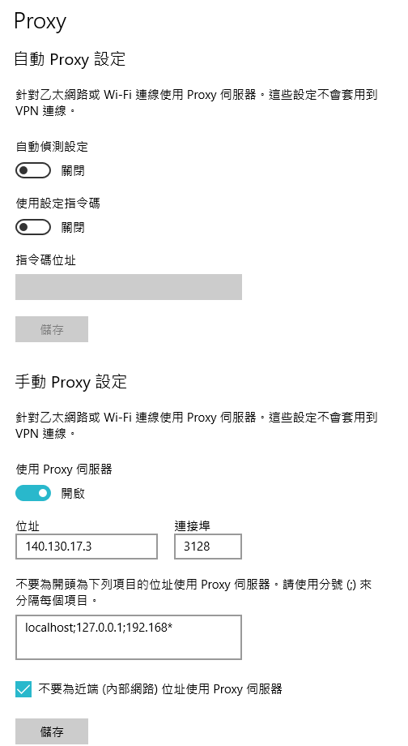
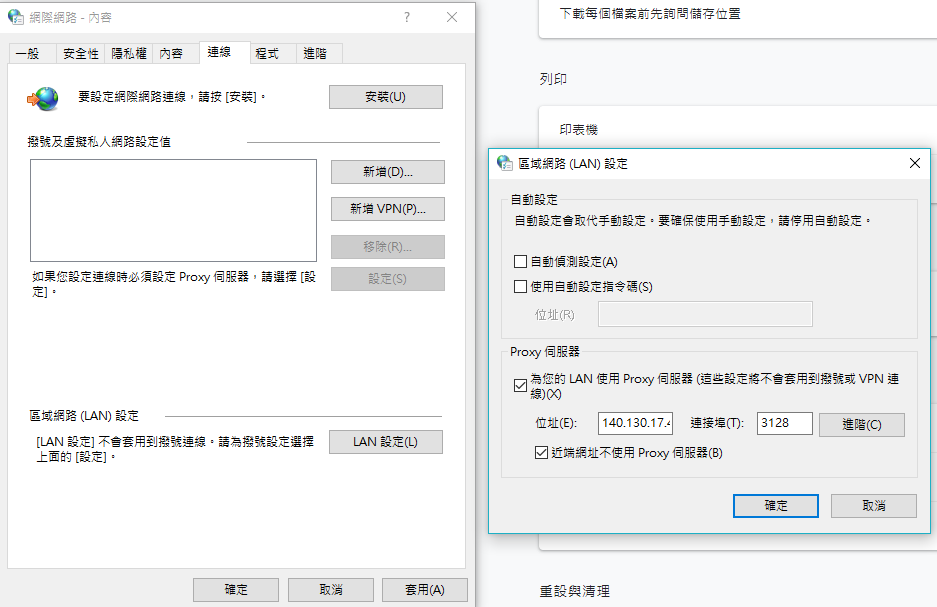

課程重點及操作 << Previous Next >> 配置可攜程式環境
網路設定
IPv4 網路與 IPv6 網路設定.
當我們上網時，電腦跟電腦間是透過IP跟網址互相連結的，
每一台電腦對外都會有一個相對應的IP位址。

此圖為第13周時的網路設定
140.130.17.3 為當時所剩之proxy位置
平常所使用的位置為140.130.17.42 或53(較為常用)
如何設定 Proxy 代理伺服器？
1.開啟Google Chrome點選Setting進階內容開啟Proxy設定
2.設定Proxy位置
